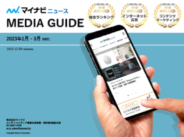

マイナビが運営する社会人向けライフステージメディアをご紹介します。
20代若手ビジネスパーソン向け「マイナビニュース」、20～30代未婚女性向け「マイナビウーマン」、妊娠中・育児中ママ＆共働き家庭向け「マイナビ子育て」、大学進学を検討中の高校生～大学生向け「マイナビ学生の窓口」の４メディアをメインに展開しています。
-

マイナビニュースはビジネスパーソンのON/OFF、男女を問わず、幅広いジャンルの情報を提供する総合ニュースメディアです。ニュースに限らず、役立つノウハウや体験レポート、まじめなレビュー、柔らかい記事から硬派な記事まで網羅しています。
マイナビニュースの媒体資料はこちら -
マイナビウーマンは、20～30代の働く女性に向けて、前へ進むヒントや変化する後押しとなる情報を届けるメディアです。様々な生き方、選択肢を提示することで、女性たちの自由で自立した人生を応援します。
マイナビウーマンの媒体資料はこちら -
マイナビ子育ては、妊娠中・育児中のママ、共働き家庭を応援するメディアです。「夫婦一緒に子育て」をコンセプトに、『パパ・ママ一緒に子育て＆家事』を行うことを促進する情報を発信していきます。
マイナビ子育ての媒体資料はこちら -
マイナビ学生の窓口は、大学進学を検討している高校生～大学生に向けて情報を届けるメディアです。「一歩踏み出せば世界が変わる。学生のはじめの一歩を応援したい。」というコンセプトのもと、学生生活が充実するための情報を発信していきます。
マイナビ学生の窓口の媒体資料はこちら -
マイナビ学生の窓口は、大学進学を検討している高校生～大学生に向けて情報を届けるメディアです。「一歩踏み出せば世界が変わる。学生のはじめの一歩を応援したい。」というコンセプトのもと、学生生活が充実するための情報を発信していきます。
マイナビ学生の窓口の媒体資料はこちら
マイナビニュース・マイナビウーマン・マイナビ⼦育てでは、特集企画を展開しています。
プロモーションに最適な時期を逃さない、シーズナル企画を随時更新しています。特集だけの超特価で、特設ページへの掲載・タイアップ記事制作・SNSを使った集客施策などをまとめて実施できます。